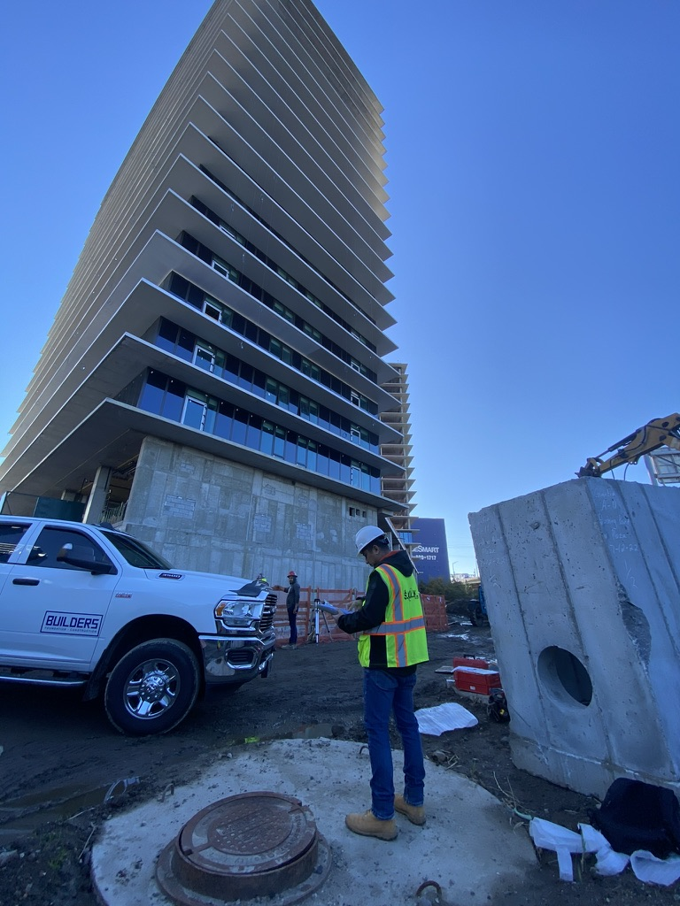

Welcome
Hello! I'm Sanat Dangol, and this is a collection of my report writing and drawing works.
Browse through my projects in the sidebar to view detailed PDF presentations of my work.
Thank you!

SKILLS AND CERTIFICATIONS
TECHNICAL
DRAFTING
SKETCHING
BIM
CAD
CONSTRUCTION DOCUMENTATION
DESIGN SOFTWARE
AUTOCAD
ILLUSTRATOR
PHOTOSHOP
REVIT
RHINO
CERTIFICATIONS
OSHA-30
OSHA-10
MTA TRACK SAFETY
FIELD EXPERIENCE
BUILDING ASSESSMENT
SITE EVALUATION
CONSTRUCTION INSPECTION
EXPERIENCE
Junior Project Manager | Kagaoan Engineering | February 2021 – August 2024
- Managed, documented and tracked construction progress, conducting insightful data analysis to inform strategic decisions.
- Conducted comprehensive building evaluations and field observations for construction projects worth over $70M
- Performed detailed cost evaluations and analysis for construction modifications and repairs
- Regularly traveled to project sites (25-50% travel) to conduct thorough assessments
- Led plan reviews and compliance checks, ensuring adherence to local building codes
- Drafted detailed construction documents for Support for Excavation (SOE)
- Mentored 1 intern and trained 2 new recruits, enhancing team productivity by 30%
- Promoted within 12 months due to strong performance
Architectural Designer | Serett Metalwork Corp | September 2020 – February 2021
- Developed comprehensive construction documents during initial design stages
- Conducted rigorous code analysis for construction and design reviews
- Performed building evaluations and condition assessments
- Conducted thorough field observations to verify existing conditions
Architectural Associate | Yellow House Architects | December 2019 – August 2020
- Developed and maintained technical documentation using AutoCAD and Revit
- Collaborated with project managers and senior developers
- Utilized 3D modeling tools for visualizing software solutions
Summer Design Associate | Silverstein Properties, Inc. | June 2019 – August 2019
- Worked with Development Vice President and Development Manager during the Schematics and Design Development phase of commercial high-rise buildings project
- Researched existing properties to provide design assistance for two high-rise commercial building project during design development
- Supported project work with graphic production for presentations and meetings
Graduate Teaching Assistant | School of Architecture at Syracuse University | August 2018 – December 2019
- Co-taught with Professor Joseph Godlewski, Ph.D. in ARC 141 Introduction to Architectural Theory
- Co-taught with Professor Bess Krietemeyer, Ph.D. in ARC 121 Introduction to Building and Structural Systems
- Graded papers and quizzes for multiple courses
- Provided guidance and support to students
Research Intern | School of Architecture at Syracuse University | January 2018 – July 2018
- Successfully developed complete Schematic Design Drawing set for ACHSO (Actions Humanitaries Et Sociales) Orphanage/School in Haiti
- Collaborated with Professor Lawrence Davis and Professor Tim Steinson on drawings, diagrams and renderings
Architecture Research Intern | School of Architecture at Syracuse University | August 2015 – December 2015
- Assisted on poster design for course work
- Assisted on distributing posters for School of Architecture Spring 2016 Lecture Series
Outreach Coordinator | Sattya Media Arts Collective | January 2013 – February 2014
- Reached out and worked with emerging national and international artists for a country-wide mural project
- Actively promoted and made effective public relations with local community for affiliated projects
- Managed work with international volunteers
- Successfully built professional relationships connecting Artists, Filmmakers, Media and communities
- Coordinated country-wide free public street documentary screenings
- Coordinated between various projects within the organization
- Advertised programs in local media and various public venues
Education
Masters in Architecture | Syracuse University | 2019

Select a project to preview
Choose a project from the sidebar to view its contents
⚠️ CONFIDENTIAL: These documents contain confidential client information. Strictly for viewing purposes only. Not for distribution. All rights reserved.